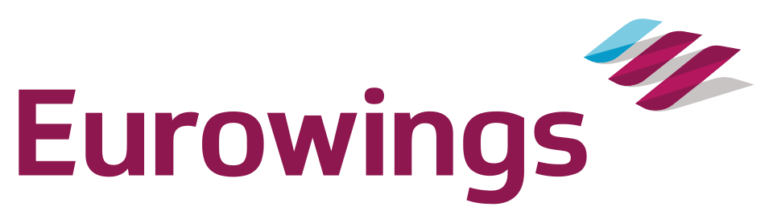

유로윙스 Eurowings
유로윙스(Eurowings)는 독일 뒤셀도르프에 본사를 둔 지역 항공사이다. 1993년에 설립되어 1994년에 취항했으며, 허브 공항은 뒤셀도르프 국제공항이고 루프트한자 계열이다.
최종 업데이트

유로윙스는 어떤 브랜드인가
유로윙스는 1993년에 설립해 1994년에 취항한 독일의 지역 항공사로, 본사는 독일 뒤셀도르프에 있다. 뒤셀도르프 국제공항을 허브 공항으로 삼으며, 현재 유럽 지역을 포함한 48개의 노선을 운항하고 있다.
스타 얼라이언스의 제휴 회원사이며, 2016년 10월 기준으로 싱가포르 항공과 유나이티드 항공 두 곳과 코드쉐어 및 마일리지 공유를 실시했다. 2009년 1월 저먼윙스 항공과 함께 루프트한자에 인수되었으며, 현재 루프트한자가 유로윙스의 계열사이다.
저먼윙스 항공은 독일의 저가 항공사로서 2002년 10월 27일에 설립되었다. 2012년 4월 기준으로 유로윙스가 보유한 기종의 평균 기령은 1.9년이었다.
유로윙스는 어떻게 시작되고 성장했나
유로윙스는 1993년에 3개의 항공사가 합병하면서 설립되었고, 설립 이듬해인 1994년 1월부터 운항을 시작했다. 독일의 저가 항공사인 저먼윙스 항공은 2002년 10월 27일에 설립되었다.
2009년 1월에는 저먼윙스 항공과 함께 루프트한자에 인수되었다. 이후 유로윙스는 독일의 지역 항공사이자 스타 얼라이언스의 제휴 회원사로서 유럽 지역을 포함한 노선을 운항해 왔다.
현재 본사는 독일 뒤셀도르프에 있으며, 허브 공항은 뒤셀도르프 국제공항이다.
유로윙스의 브랜드 아이덴티티는 무엇인가
유로윙스는 뒤셀도르프를 허브로 하는 독일의 지역 항공사로, 루프트한자 계열이자 스타 얼라이언스의 제휴 회원사라는 점이 특징이다.
유로윙스의 대표 제품과 서비스는 무엇인가
유로윙스의 사업은 항공 운송이며, 독일 뒤셀도르프에 본사를 두고 뒤셀도르프 국제공항을 허브로 노선을 운항한다. 현재 유럽 지역을 포함해 48개의 노선을 운항하고 있다.
2016년 10월 기준으로 싱가포르 항공과 유나이티드 항공이 코드쉐어 및 마일리지 공유를 실시하는 항공사였으며, 두 항공사 모두 스타 얼라이언스 소속이다. 보유 기종은 현재 보유 중인 기종과 퇴역 기종으로 나뉘어 정리되어 있다.
2012년 4월 기준으로 보유 기종의 평균 기령은 1.9년이었다.
유로윙스는 지금 어떤 상태인가
유로윙스는 루프트한자의 계열사이며 본사는 뒤셀도르프에 있다. 2009년 1월 저먼윙스 항공과 함께 루프트한자에 인수되었다.
스타 얼라이언스의 제휴 회원사로서 뒤셀도르프 국제공항을 허브로 하여 유럽 지역을 포함한 48개의 노선을 운항하고 있다. 1993년에 설립되어 1994년 1월 운항을 시작한 항공사이다.
유로윙스 로고는 어떻게 변해왔나
자주 묻는 질문
유로윙스는 어느 나라 브랜드인가요?
유로윙스는 독일의 여행·호스피탈리티 브랜드입니다.
유로윙스는 언제 설립되었나요?
유로윙스는 1993년 설립되었습니다.
유로윙스의 브랜드 아이덴티티는 무엇인가요?
유로윙스는 뒤셀도르프를 허브로 하는 독일의 지역 항공사로, 루프트한자 계열이자 스타 얼라이언스의 제휴 회원사라는 점이 특징이다.
유로윙스의 대표 제품은 무엇인가요?
유로윙스의 사업은 항공 운송이며, 독일 뒤셀도르프에 본사를 두고 뒤셀도르프 국제공항을 허브로 노선을 운항한다.
유로윙스는 현재 어떤 상태인가요?
유로윙스는 루프트한자의 계열사이며 본사는 뒤셀도르프에 있다.
유로윙스의 본사는 어디에 있나요?
유로윙스의 본사는 뒤셀도르프에 있습니다(위키데이터 기준).
유로윙스의 모기업은 어디인가요?
유로윙스의 모기업은 Lufthansa입니다(위키데이터 기준).
출처와 검증
유로윙스 관련 참고: 공식 웹사이트 · 위키데이터 Q168836 · 한국어 위키백과 · 영어 위키백과. 브랜드명은 한글과 원어를 함께 표기하되 데이터에 없는 표기는 만들지 않습니다. 기원 국가·설립연도는 검수된 정의문에서 확인된 값을 우선하고, 없을 때만 공식 웹사이트 URL이 일치하는 위키데이터 개체의 값을 씁니다. 탄생일의 월·일은 위키데이터, 위키백과 정보상자, 본문 가운데 같은 연월로 확인되는 값만 싣고, 출처끼리 다르면 싣지 않습니다. 위키데이터 값은 2026-11-12 기준입니다.